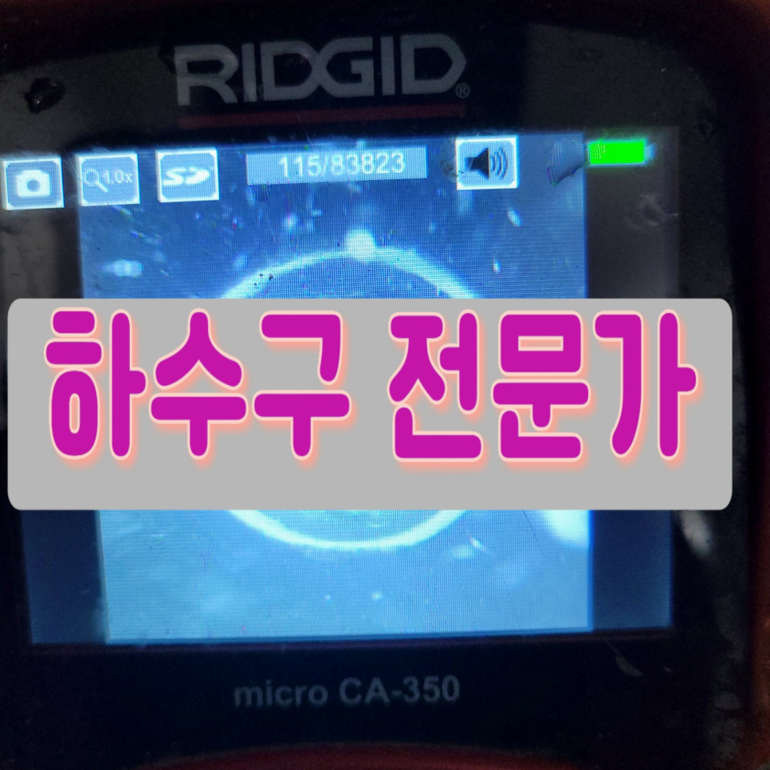
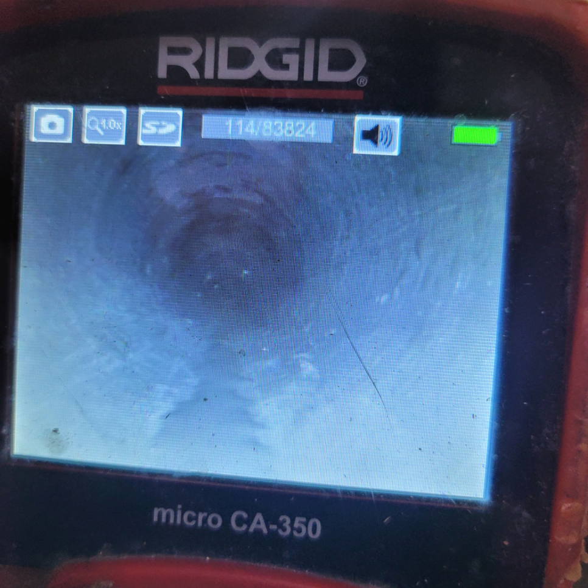
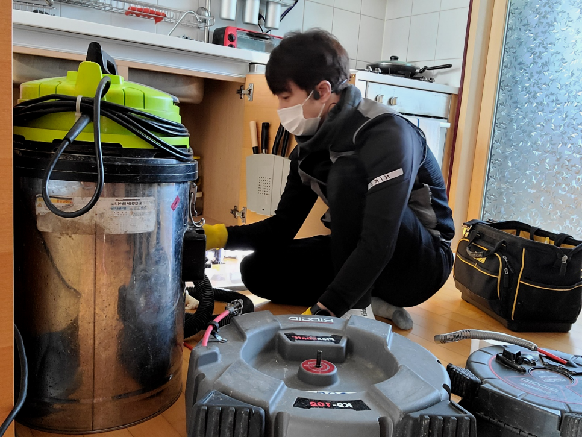
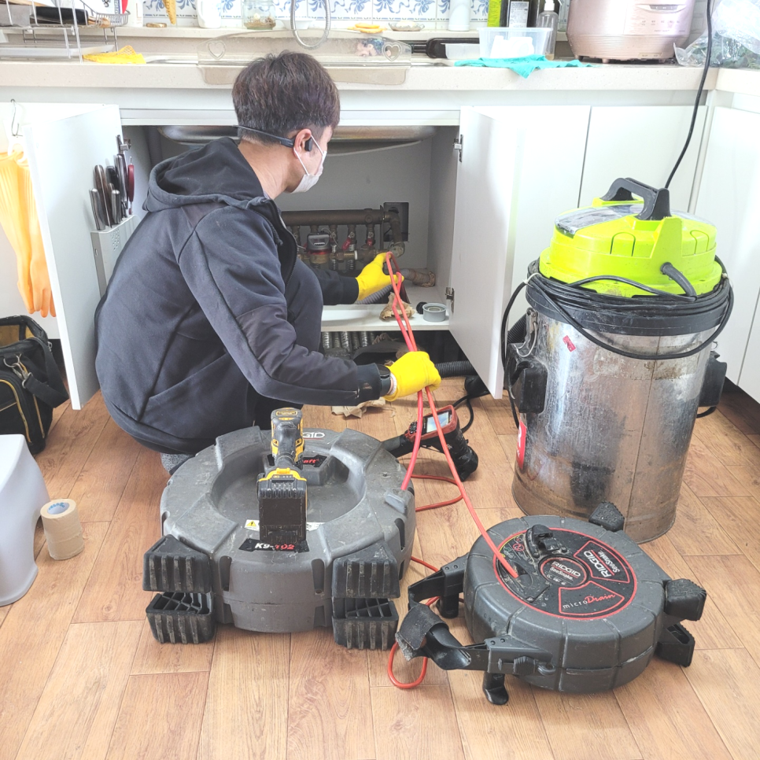
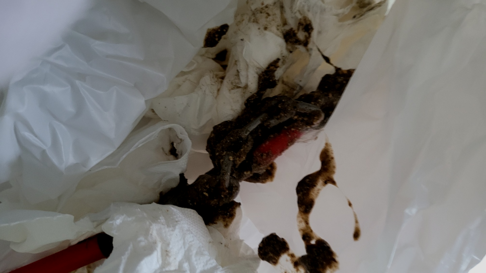
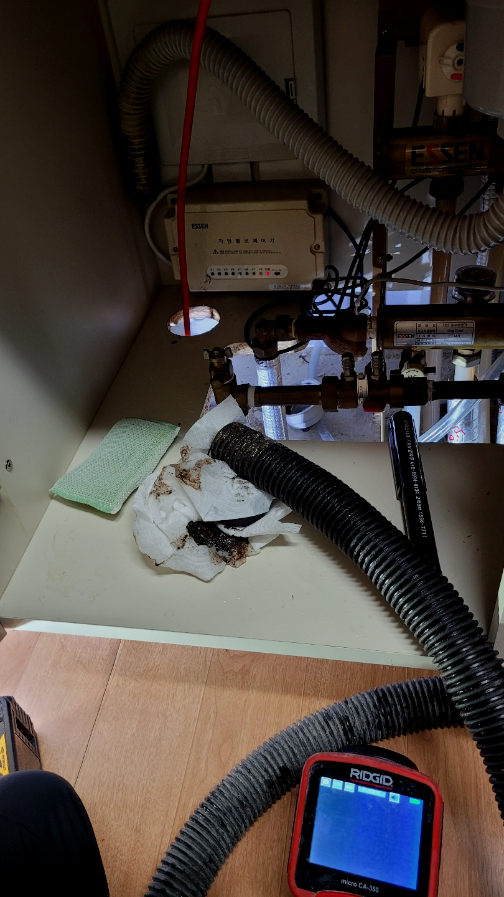
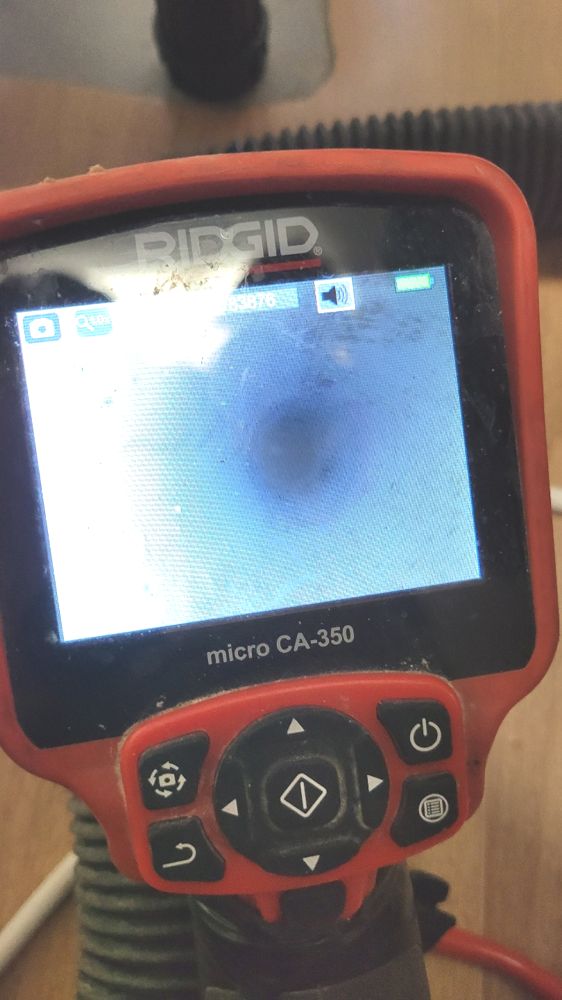

🏠 시흥시 금이동씽크대막힘뚫음 안현동 하수구역류 뚫는설비업체
시흥 금이동 싱크대막힘 전문 시공 후기

📋 작업 개요
- 위치: 시흥 금이동, 금이동, 시흥
- 서비스 유형: 싱크대막힘, 변기막힘, 하수구막힘, 배관막힘, 역류해결, 뚫는업체, 배관청소, 고압세척
- 작업 일시: 2023. 10. 8. 12:47
- 업체명: 하수구수사대 (010-5615-2118)
🔍 문제 상황
안녕하세요.
설비전문업체 "하수구수사대"를 찾아주셔서 감사합니다.
아무런 이상 없이 썻던 하수가 배관막힘이 생긴다면 이를 경험한 여러분의 입장에선 상당히 당황스러우실거에요.
배수구금방 해결되는 가벼운 경우도 있지만 문제 파악이 확실히 안되는 일은알아서 시도하기보단 믿을 만한 업체에 곧장 의뢰하시는 편이 좋습니다.
시흥시 금이동씽크대막힘뚫음 안현동 하수구역류 뚫는설비업체

🔎 원인 분석
💡 전문가 진단: 시흥시 금이동씽크대막힘뚫음 안현동 하수구역류 뚫는설비업체
가정집은 물론 상가처럼 큰 건물이나 업체 건물처럼 퇴수자체가 큼지막한 곳도 자주 나가서 작업을 합니다. 가정집도 예외 없으면 준비성은 기본이고 금액에 관련해서 우려되시는 분들을위해 기본적으로 유선안내해 드리고 있습니다.
퇴수구 구조를 확실히 이해하고 있어야만 작업 진행을 하기 전에 어떤식으로 작업을 할지 막히게 되었을지 간단하게 예상을 할 수도 있고 진행을 할때 이런 전문지식이 있어야 작업시간 단축에 큰 도움이 됩니다.
또 약품을 잘못사용하면 막힌 배수구 상황을 더 악화시키고 많이 쓰게되면 배관이 더 안좋아서 배관교체를 해야할수도 있으니 쓰시려 할때는주의해야 합니다.
성공률도 빼놓을 수 없는 요소겠지만 민첩하게 고칠 수 없다면 모든 손실들은 고객분의 몫이 되므로 가능한 한 빨리 달려나가배수구 뚫어드리는 중이랍니다.
저희는 하수 막힘의 현장이라면 어디든 도착을 하자마자 신속하게 배관 내부의 상황을 파악하기 위한 작업을 먼저 하게 됩니다. 하수배관은 육안으로 보이지 않는 곳이기 때문에 항상 내시경 장비를 이용해서 내부의 상황과 막힘 원인을 파악을 해야 하는 것인데요.
특히 현장처럼 배관이 드러나 있지 않고 건물 속이나 땅속에 묻혀있는퇴수구 배관에 문제가 생겨도 관로 탐지기라는 장비를 활용해서 찾고 상태를 볼수 있습니다. 건물이나 땅을 부수지 않다도 되기 때문에 편리하게 작업을 할수 있습니다.

🔧 작업 과정
배관이 퇴수구가 막혔을 때 올바르지 않은 방법으로 해결하면 건물 내 다른 공간에도 문제를 일으킬 수 있어서 주의가 필요합니다. 건물 내 퇴수구을 확인하고 싱크대 하수구 냄새의 원인인 위치를 파악했습니다. 일차로는 맨눈으로 확인하고 정밀 점검을 하고 문제 해결을 위해 장비를 사용했습니다.
뚫어도 금방 막히는 퇴수같은 경우에는 한 번쯤 고압세척 작업과 함께 내시경 촬영 작업을 통해서 확인을 해 보시는 것을 추천드립니다. 뚫는 작업이 한번에 작업으로 모두 제거가 되면 좋지만 이물질들이 너무 오래되어서 딱딱하게 굳어서 한 번에 제거를 하기가 쉽지 않았습니다.
배수막힌배관을 뚫을려할때 사용되는최첨단장비로는 빨아드리거나 샤프트를 이용하고 막힌곳에따라 적절한기계를 쓰고있답니다. 무슨상태이든지 그에맞는전문장비들이 갖춰져있어서 우려하시지 않아도되는데요.
이와같은문제로인해 꾸준히케어 하셔야해요.하지만이것과는 다르게 하시는것조차 망설이시는데요. 배수 깊숙한곳까지 직접보는게힘든 상황이원인이랍니다.
안쪽에위치한 기름때들을 강력한압력으로 청소하는 석션기가있고 기계의헤드에 붙어있는 360도로회전하는체인으로 퇴수구 이물질을제거할수있는 스케일링기계도 갖춰져있습니다
스스로해결이되는 상황이였으면 배수구 전문기사는있지도 않았을겁니다.배관에있는 석회들은 물에는녹지못하고 안타깝지만 시간이가면갈수록 지속적으로 누적되어서 상황이심각해지게됩니다.
어떠한것보다 문제가발생하면 사용할수없어서 평소에생활이 불편해집니다.배출구역류를 안해야하지만 그렇게안된다면 상태가심각해집니다.
특별히 기름류의 조리를 하는 곳에서 더욱 많이 발생하는 기름 슬러지지만 빵이나 커피에도 기름기가 많아서 기름 슬러지가 잘 생기기 때문에 관리를 자주 해줘야 합니다.
장비로 작업이 제대로 안된다는 느낌이 들 때는 빨리 중단하고 그 원인을 찾아봐야 합니다. 이는 실내에서의 작업에서도 마찬가지입니다.


✅ 작업 완료
배관들은 온갖 사유로 장애가 발생하는데 어떤 배출수막힘들도 마주해보고 고쳐본 적이 없다면 예기치 못한 증상에는 대처 불가능하기에 못 뚫어 버릴 수도 있습니다. 입증 가능할 만한 실력 보유자만 뭉쳐있는 까닭 중의 하나입니다.
금액적인 문의로 연락 주시더라도 설명드리겠으니 부담감은 덜어놓으셔도 좋습니다. 위급할 때도 도움받으실 수 있게끔 밤낮 가리지 않고 연락받는답니다. 일이 커지기 전에 연락 주세요!
#하수구막힘 #하수구뚫음 #하수구역류 #씽크대막힘 #싱크대역류 #오수관막힘 #하수구청소 #욕실하수구막힘 #변기막힘 #하수구뚫는비용 #싱크대수리 #화장실막힘




⚠️ 주방 싱크대 배관 막힘 예방 수칙
- ✅ 기름기가 묻은 식기나 프라이팬은 설거지 전 키친타올로 반드시 기름때를 닦아내세요.
- ✅ 주기적으로 싱크대 개수대에 뜨거운 물을 가득 받아 한 번에 내려 배관 내부 기름을 씻어내세요.
- ✅ 배수구 거름망을 미세한 필터로 사용하시고 음식물 찌꺼기가 틈으로 새어 들지 않게 관리하세요.
- ✅ 베이킹소다와 식초를 뜨거운 물과 함께 일주일에 한 번씩 부어주면 배관 살균과 막힘 예방에 좋습니다.
💡 핵심 정리
- 확실한 장비 작업(내시경 점검 및 샤프트 스케일링)으로 원인을 뿌리 뽑습니다.
- 작업 후 1년 이내에 동일한 부위 재발 시 100% 무상 A/S 서비스를 보장합니다.
- 서울 · 경기 · 인천 전 지역에 24시간 언제든 긴급 출동할 수 있도록 항시 대기 중입니다.
❓ 자주 묻는 질문 (FAQ)
🚨 시흥 금이동 싱크대막힘 문제로 고민이신가요?
정확한 원인 진단과 확실한 시공으로 재발 없는 해결을 약속드립니다.
24시간 긴급 출동 | 서울 · 경기 · 인천 전지역 | 1년 내 재발 시 무상 A/S